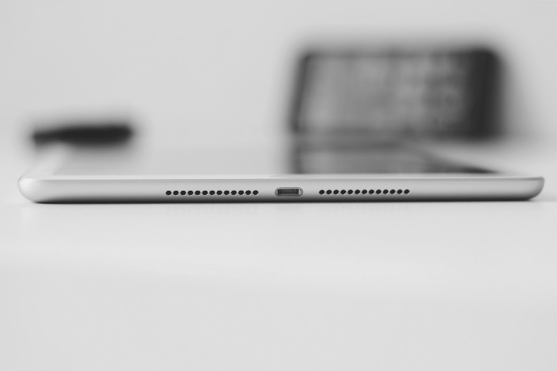

So I'm a backend developer. I'm often closest to the source of most technical problems at my job. Networking issues, memory issues, hardware issues, operating system issues, the list goes on. I need to be able to tinker and play with things often, so usually my work environments reflect this. So the question is, why in God's name would I want to move to an iPad?
The downsides are immediately obvious, I have almost no tinkering power on here. It's not Open Source, like at all. There's very little I can do with this if something goes wrong, recently I had an issue with an app not syncing with my iPhone, I had to contact the developer and ask for assistance, rather than just jump down to the log files or the code itself and see what was up.
I also like to keep abreast of whatever new tech changes happen on Linux machines. Examples off the top of my head are the removal of ifconfig on most systems or the change to upstartd, these were things I had faced on my bleeding edge desktop long before the became the norm on my work servers. But, most of these "issues" I can live with. Let me explain the benefits and how I've gotten around the inability to tinker and play about with the bleeding edge server changes.
These days I prefer Apps to the Web. For me the web is an open-ended mind field of negative sentiment and distraction. I find myself disliking it more and more when I jump onto a web browser for anything other than totally focused work, it's just a time suck for me. So now I find the idea of a full-screen, mostly single tasking app-driven system does wonders for my focus. (IOS does support split screen but it's mostly terrible to use and unintuitive in it's design, so I'm happy to ignore it's existence).
What single tasking am I doing? Right now I'm writing this on the wonderfully hipster Hanx app, which is essentially an old type-writer clone(for some reason the sound of old clackey keys makes me want to write more). I also spend a fair amount of time reading and writing on the Medium, and I have a few dev/ssh apps on here(but more on that later), in general it's mostly to pop on, do something specific and hop off. Rarely do I hit Safari and rarely do I get stuck on some random time-sink that had nothing to do with my original intentions. The sandboxed feel of working within the context of "Apps" genuinely has done wonders for my sanity.
The first thing I do when I jump onto my own Macbook or my work Linux machine is maintenance. Any new brew updates on this thing? Everything running okay? Do I need to run CleanMyMac or Hazel to tidy things up? Often times on my personal machine, I don't want to think about these tasks, I want to use the tool in my hands, not screw about with it's inner workings. I might be a developer, but at home I might want to just hop on some writing project or screw around with my guitar on Garageband, I would say, with a laptop more than half the times I wanted to do some specific task, I would go down some unrelated technical rabbit hole and go nowhere near the task I intended on solving. The iPad removes a lot of that, it feels like it's removed a barrier that I always have with my Macbook.
When I do want to start screwing around with things, as I often do, I spin up a DigitalOcean instance, SSH on and play around, simple as that. I have an iPad that takes a sim card for cellular data and ssh doesn't take up much data for me. On top of that DigitalOcean instances seem to spin up pretty instantaneously for me, so there really isn't much of a barrier for me to get to a tinkery Debian environment from my iPad.
Also for me and my personal tinkering, Vim is a perfectly excellent editor. However, I even have a local editor on my iPad that allows me to mount remote SSH servers should I want something locally. Also pleasantly Emacs with Spacemacs seems to work fine over ssh, so if I need to do some heavier development, that's always an option.
The nice thing about all this however is my tinkering environment is siloed in a very pleasing way. It's also fully backed up at an OS level for a dollar a month, so if I screw something up and totally bomb it, firstly I haven't lost my general purpose computing device and secondly I can restore what is non-essential tinkering server from a backup from a few days ago.
Maybe is was because of my Dev setup and the iPad has forced some simplicity on me, but my 2017 Macbook Pro had a shitty battery life for me. Again, this could be down to Docker images or some other pile of services on my old machine that killed the battery, but I never ever got close to the advertised speeds on my Macbook. My iPad however, has a crazy good battery. Sure, Docker, Vagrant and the other power sucks have been migrated off to a remote server so perhaps "technically" this iPad battery is worse than my Macbook but practically speaking, it's incredibly good.
All day at work I deal with things like package management issues, log files, potential security threats, etc. There is certain amount of pleasure in pulling this device out(that does "just work") and start doing productive things, without thinking about all of the crap I usually need to maintain on a machine. When I (very rarely) hop onto my MacBook at home, there's a sense of dread that there will be something I need to deal with. The whole interface to it feels clunky, should I really need to maintain brew packages every time I hop onto a machine?
Certainly you can argue that I could set my MacBook up to be more sandboxed and probably doesn't need constant maintenance, but ultimately my tinkering is an addiction. I feel compelled to just start messing around with things and create yet another crazy setup that will add no value and I will inevitably discard but will take me a bunch of time to configure properly. I left my Linux machine for a Macbook, mostly due to endless tinkering. However all the Macbook became was a shit version of Linux for tinkering. I still found endless time to waste on maintenance getting "The Perfect Setup".
I mean, I know full well RMS would be very angry with me. I guess I'm at a point where I no longer care. I have little to prove to anyone either. In my younger days there was a sense of pride pulling out my custom installed ArchLinux distro, with some obscure window manager and working almost purely from the command line. I could show off my crazy looking colour terminal where most of my work is done(I mean that is basically what my work development environment looks like right now). Lately however, I'm seeing these machines much more as tools to be used than a time-suck in and of themselves.
Since I've had this iPad, I have only ever used my Macbook for yanking files off of, nothing more. In my mind this is a success, but only time will tell.